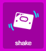
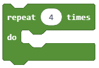

Detyrë - Byrzylyku¶
Në një shkollë fillore, në fund të klasës së dytë, nxënësit u paraqesin prindërve të tyre atë që mësuan gjatë klasës së dytë. Gjatë ngjarjes, disa studentë duhet të mbajnë rrathë, të cilat duhet të shfaqin lule kur studentët që i veshin lëvizin duart.
Një byzylyk, i cili shfaq lule mund të bëhet duke përdorur një pajisje Micro:bit. Shfaqja e luleve do të simulohet nga LED që ndizen dhe fiken çdo herë që përdoruesi lëviz dorën e tij / saj.

Për të bërë byzylyk, do t’ju duhet:
1 Micro:bit
Pëlhurë ose letër dekorative
Gërshërë
Shirit ngjitës / Thread
Është e nevojshme të programoni Micro:bit për të treguar një lule në ekranin e tij (rrjet 5 LED LED) sa herë që përdoruesi shtrëngon dorën e tij / saj.
Hapi 1
Shkoni në https://makecode.microbit.org/.
Ne duam të krijojmë një program, i cili do të lejojë që ekrani Micro:bit të tregojë një lule sa herë që bëhet një lëvizje, më saktë, ne duam të regjistrojmë çdo lloj lëvizjeje me pajisjen Micro:bit duke përdorur përshpejtimin e tij. Ekrani nxjerr pamjen e dëshiruar (duke ndezur LED) vetëm kur zbulohet një lëvizje.
Për zgjidhjen e kësaj detyre, ne do të përdorim një nga blloqet e kushtëzuar (blloqet degëzuese) me kushtin që të jetë bërë një lëvizje. Cila linjë (degë) e kodit do të përdoret nëse varet nëse kushti është përmbushur apo jo. Nëse një lëvizje është regjistruar, pajisja Micro:bit do të shfaqë një lule, dhe nëse jo, LED do të qëndrojnë të fikur.
Hapi 2
Filloni një projekt të ri dhe tërhiqni bllokun  nga kategoria
nga kategoria  në bllokun
në bllokun  , të vendosura në kategorinë
, të vendosura në kategorinë  .
.
Blloqet e vendosura brenda bllokut foever do të funksionojnë derisa të fiket Micro:bit.
Zvarrit bllokun  (vendosur në kategorinë
(vendosur në kategorinë  ) në fushën hyrëse për gjendjen
) në fushën hyrëse për gjendjen  .
.
Nga lista drop-down e bllokut :

zgjidh opsionin . Ky opsion regjistron lëvizjet.
Bazuar në vendosjen e detyrës, një lule do të shfaqet në Micro:bit kur të jetë regjistruar një lëvizje (d.m.th. në rastin tonë kur kushti është përmbushur). Është e nevojshme të tërhiqni blloqet për shfaqjen e luleve (të cilat ndizni LED të veçantë) nga kategoria Basic në degë (kushti i përmbushur, ose dega YES):

Ne do të përdorim tre blloqe show led për shfaqjen e luleve. Këto blloqe do të përdoren për të shfaqur imazhin e dëshiruar të një lule.
Pamja e programit kur është bërë një lëvizje:

Bazuar në vendosjen e detyrës, ekziston gjithashtu një kusht që thotë se nëse një lëvizje nuk është regjistruar, asgjë nuk duhet të shfaqet në Micro:bit. Për ta arritur këtë, duhet të shtojmë një degë, e cila do të ekzekutojë blloqe të caktuara kur kushti nuk është përmbushur (në rastin tonë, kur nuk ka lëvizje). Ne mund ta shtojmë këtë degë duke klikuar në shenjën  . Në këtë degë do të shtojmë bllokun
. Në këtë degë do të shtojmë bllokun  , i cili përdoret për të pastruar ekranin Micro:bit.
, i cili përdoret për të pastruar ekranin Micro:bit.
Pamja finale e byrzylykut:

Stimulimi:

Hapi 3
Shkarkoni skedarin .hex në kompjuterin tuaj duke klikuar në butonin  ose butonin
ose butonin  . Micro bit do të jetë gati për të filluar punën pasi të keni tërhequr skedarin mbi të.
. Micro bit do të jetë gati për të filluar punën pasi të keni tërhequr skedarin mbi të.
Kur të përfundoni programimin e Micro:bit, vendoseni në rastin e bërë tashmë me byzylyk dhe filloni ta përdorni.
Byzylyku: